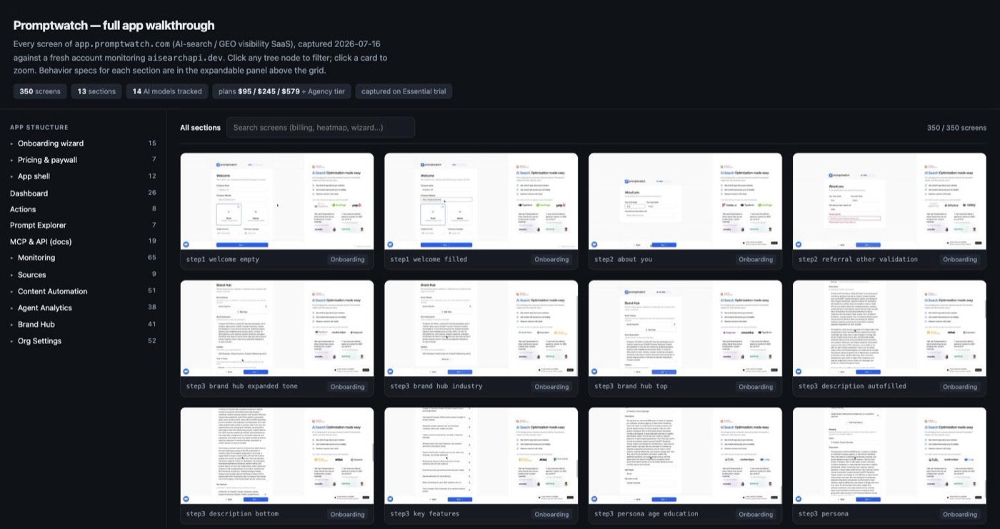

Map every screen
of any app.
AppAtlas walks a whole application end to end, covering every screen, sub-tab, setting, and flow. You get screenshots, flow recordings, behavior specs, and a browsable atlas you can filter and share. Web and mobile.

Not a pile of screenshots. A structured atlas.
Every section gets a behavior spec covering each control, empty state, and gated screen, cross-linked to the exact captures. Read it like a map key.
One browsable index
A single self-contained HTML page: a collapsible app-hierarchy tree (nav group, page, sub-tab, modal) that filters a searchable screenshot gallery, with every screen's spec one click away. Light and dark, zero dependencies.
Complete coverage
Every nav item, dropdown, and little setting, audited at the feature level so nothing hides in a menu.
Behavior specs
What each button does, what options exist, how the UI responds. Not just what it looks like.
Flow recordings
Short GIFs of the key product moments, captured as the crawl exercises them.
Subagent crew
A fleet of Claude subagents crawl in parallel where safe, sequential where they would collide.
Safe on live accounts
No payment data, no destructive actions. Paid checkouts hand back to you; trials it starts, it can cancel.
Filter it like a chart table.
The app's real structure becomes a collapsible tree: nav group, page, sub-tab, modal. Click a node to filter the gallery, search across every screen, and pop any capture into a lightbox with its spec beside it.
Key moments, captured on the way through.
A record drill-down, a generation completing: the moments worth watching become short GIFs during the crawl, not a manual re-run afterward.

How a walk runs
An orchestration pattern, not just a prompt, with a blocker playbook for the things that derail automated crawls.
Install
This repo is its own Claude Code plugin marketplace.
# as a plugin
# add this repo as a marketplace /plugin marketplace add sleepyw33kday/appatlas # install it /plugin install appatlas@appatlas
# as a skill (manual)
git clone https://github.com/sleepyw33kday/appatlas cp -r appatlas/skills/appatlas \ ~/.claude/skills/appatlas
# then just ask
Do an appatlas of https://app.example.com. Document every screen and setting, screenshots plus specs, and give me a browsable index.
Requires Claude Code with the Claude-in-Chrome tools for web apps; Xcode and a simulator (idb) or an Android emulator (adb) for mobile.